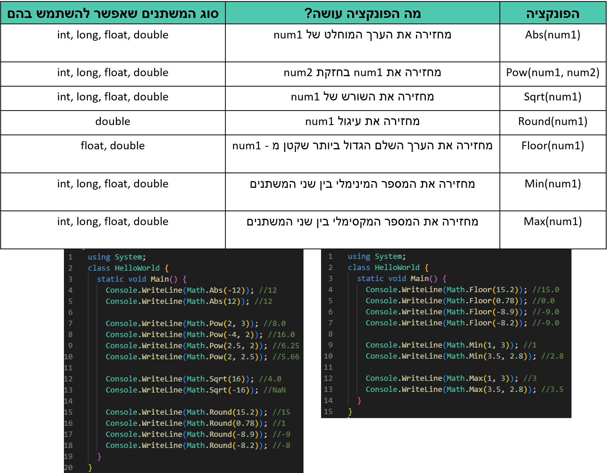
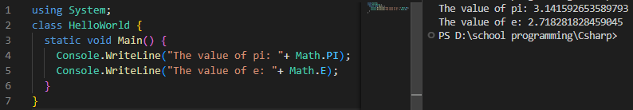
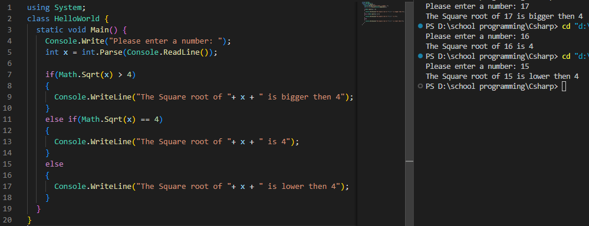
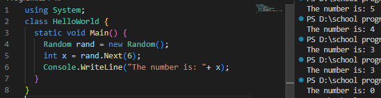

.קיימות ספריות שבהן ניתן להשתמש C# - ב
.Math אחת מהספריות היא ספריית
...ניתן להשתמש בפונקציות מתמטיות כמו ערך מוחלט, חזקה, שורש ועוד Math בספריית
:Math הנה פונקציות שכיחות בספריית

:כך ,E - ניתן להשתמש בערכים של פאי ו Math בספריית

.או בכל דבר אחר שצריך חישוב ,if כמובן שאפשר להשתמש בפונקציות אלו לא רק להדפסה, ניתן לשלב אותן בתנאי

Random פונקציית
.Random בסי שארפ יש פונקציה שנקראת
:בפונקציה הזאת יש אפשרות להגריל מספרים בצורה הבאה

(כולל 0 ו - 5) בטווח המספרים 0 - 5 x והגרלנו מספר לתוך המשתנה Random מהמחלקה rand יצרנו עצם שנקרא
ואפשר לראות שכל פעם יצא מספר שונה בטווח 0 - 5 x לאחר מכן הדפסנו את
*בהמשך כשנלמד תכנות מונחה עצמים נבין מה עשיתי כאן ,Random בשורה הראשונה יצרנו עצם מהמחלקה*
,(נגיד בין 20 ל - 40) אם נרצה להגריל מספרים בין טווחים אחרים
?איך נעשה זאת